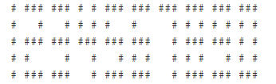
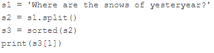

center() – центрує рядок всередині поля відомої довжини;
count() – рахує кількість входжень даного символу в рядку;
join() – з’єднує всі елементи кортежу/списку в один рядок;
lower() – перетворює всі літери рядка на малі;
lstrip() – видаляє білі символи з початку рядка;
replace() – замінює задану підрядок іншим;
rfind() – знаходить підрядок, пошук починається з кінця рядка;
rstrip() – видаляє білі символи з кінця рядка;
split() – розбиває рядок на підрядки з використанням заданого роздільника;
strip() – видаляє білі символи з початку і кінця рядка;
swapcase() – змінює регістр літер на протилежний (малі на великі і навпаки);
title() – робить першу літеру в кожному слові великою;
upper() – перетворює всі літери рядка на великі.
Аналіз вмісту рядків
Содержимое строки можна визначити за допомогою наступних методів (вони повертають логічні значення):
endswith() - закінчується рядок заданою підстрокою?
isalnum() - складається рядок лише з букв і цифр?
isalpha() - складається рядок лише з букв?
islower() - складається рядок лише з малих літер?
isspace() - складається рядок лише з пробільних символів?
isupper() - складається рядок лише з великих літер?
startswith() - починається рядок з даної підстроки?
Важливо!
Не всі методи можуть змінювати рядок “на місці”, декотрі створюють копію.
Приклад 1
Написати власну функцію, яка працює практично так само, як оригінальний метод split(), а саме:
вона повинна приймати рівно один аргумент - рядок;
вона повинна повертати список слів, які можна створити з даного рядка, розділивши його пробілами;
якщо рядок порожній, функція повинна повертати порожній список;
ім’я функції mysplit().
Використовуйте шаблон у редакторі. Добре протестуйте свій код.
Code
def mysplit(string): string = string.strip()ifnot string:return [] list_split = [] word =""for char in string:if char !=" ": word += charelse:if word: list_split.append(word) word =""if word: list_split.append(word)return list_split# I варінат (некрасивий, але, можливо, оптимальніший, ніж ІІ)# def mysplit(string):# string = string.lstrip() # метод strip() не змінює об'єкт, а створює копію!# list_split = []# if string.isspace() or string == "": # якщо рядок пустий, або з одних пробілів# return list_split# if string.find(' ') == -1: # якщо з одного слова# list_split.append(string)# return list_split# fnd_1 = 0# fnd_2 = string.find(' ')# while fnd_2 != -1:# list_split.append(string[fnd_1:fnd_2])# fnd_1 = fnd_2# fnd_2 = string.find(' ', fnd_2 + 1)# return list_split# ІІ варіант (красивий, але не факт, що оптимальний)# def mysplit(string):# list_split = []# word = ""# for char in string:# if char == " ":# if word:# list_split.append(word)# word = ""# else:# word += char# if word:# list_split.append(word)# return list_splitprint(mysplit("To be or not to be, that is the question"))print(mysplit("To be or not to be,that is the question"))print(mysplit(" "))print(mysplit(" abc "))print(mysplit(""))
Це пристрій (іноді електронний, іноді механічний), який призначений для відображення однієї десяткової цифри за допомогою підмножини з семи сегментів. Якщо ви все ще не знаєте, що це таке, зверніться до статті у Вікіпедії.
Ваше завдання - написати програму, яка здатна імітувати роботу пристрою з семисегментним дисплеєм, хоча краще все ж таки використовувати окремі світлодіоди замість сегментів.
Кожна цифра складається з 13 світлодіодів (деякі горять, деякі вимкнені) – ось як ми це уявляємо:

Цифри у семисегментному поданні
Примітка: цифра 8 показує всі світлодіоди, які включені.
Ваш код повинен відображати будь-яке невід’ємне ціле число, введене користувачем.
Порада
Використання списку з десятьма цифрами може бути дуже корисним.
Цей шифр був (мабуть) винайдений і використаний Гаєм Юлієм Цезарем та його військами під час Галльських війн. Ідея досить проста - кожна буква повідомлення замінюється на найближчу наступну (A стає B, B стає C тощо). Єдиним виключенням є буква Z, яка стає A.
Напишіть програму для шифрування повідомлення, використовуючи такі припущення:
вона приймає лише латинські літери (примітка: римляни не використовували пробіли, ні цифри);
всі літери повідомлення знаходяться у верхньому регістрі (примітка: римляни знали лише великі літери).
Code
# Caesar cipher.# text = input("Enter your message: ")text ="Hello World!"cipher =''for char in text:ifnot char.isalpha():continue char = char.upper() code =ord(char) +1if code >ord('Z'): code =ord('A') cipher +=chr(code)print(cipher)
IFMMPXPSME
Приклад 4
Напишить програму для дешифрування повідомлення, зашифрованого шифром Цезара.
Code
# Caesar cipher - decrypting a message.# cipher = input('Enter your cryptogram: ')cipher ="IFMMPXPSME"text =''for char in cipher:ifnot char.isalpha():continue char = char.upper() code =ord(char) -1if code <ord('A'): code =ord('Z') text +=chr(code)print(text)
HELLOWORLD
Завдання 1
Ви вже знайомі з шифром Цезаря, і тому ми хочемо, щоб Ви покращили код, який ми нещодавно показували.
Вихідний шифр Цезаря зрушує кожен символ однією: a стає b, z стає a, тощо. Давайте зробимо його трохи складнішим і дозволимо зміщеному значенню вийти з діапазону 1-25 включно.
Крім того, нехай код зберігає регістр літер (малі літери залишаться малими), а всі неалфавітні символи повинні залишитися без змін.
Ваше завдання - написати програму, яка:
запитує у користувача рядок, який треба зашифрувати; запитує користувача значення зсуву (ціле число з діапазону 1-25 - примітка: Ви повинні змусити користувача ввести дійсне значення зсуву (не здавайтеся і не дозволяйте некоректним даним обдурити Вас); друкує закодований текст. Протестуйте свій код, використовуючи надані нами дані.
Code
def caesar_cipher(text, code): cipher =''for char in text:if char.isalpha(): start =ord('A') if char.isupper() elseord('a') shifted = (ord(char) - start + code) %26+ start cipher +=chr(shifted)else: cipher += charreturn cipherdef get_valid_code():whileTrue:try:# code = int(input("Введіть значення зсуву (1-25): ")) code =16if1<= code <=25:return codeelse:print("Будь ласка, введіть число в діапазоні від 1 до 25.")exceptValueError:print("Будь ласка, введіть ціле число.")# text = input("Введіть текст для шифрування: ")text ="s vyfo iye"code = get_valid_code()encrypted_text = caesar_cipher(text, code)print("Зашифрований текст:", encrypted_text)
Зашифрований текст: i love you
Завдання для самостіної роботи
Виконати приклади 1-4 і завдання 1, наведені вище у цьому зошиті.
Створити файл lab_9_StudentLastName.py з написаним кодом.
Закомітити файл у локальний репозиторій.
Відправити (“запушити”) поточну версію Git-проєкта у віддалений репозиторій на GitHub.
Звіт має складатися з файлу (за основу взяти цей Python-зошит) lab_9_StudentLastName.ipynb. (Можливі якісь додакові файли)
Контрольні запитання
Який із наступних рядків описує справжню умову?
перший і третій рядок.
Який очікуваний результат наступного коду?

‘are’.
Який очікуваний результат наступного коду?
Викличе помилку, тому що в рядку i = int(s1), s1 не є цілим числом, тому вивід буде ValueError.